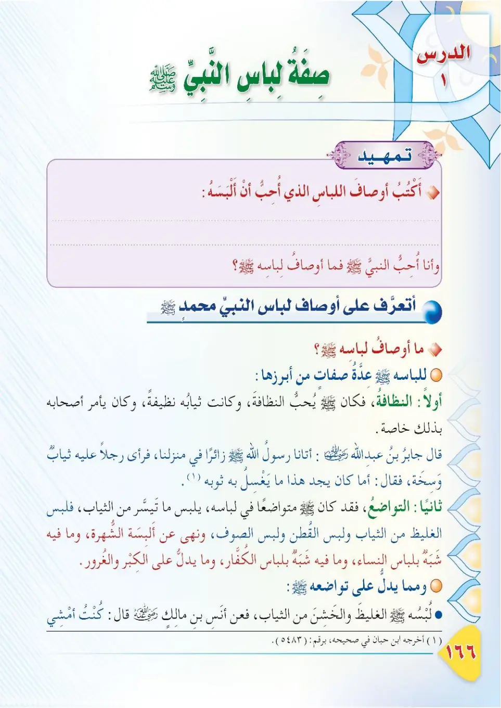
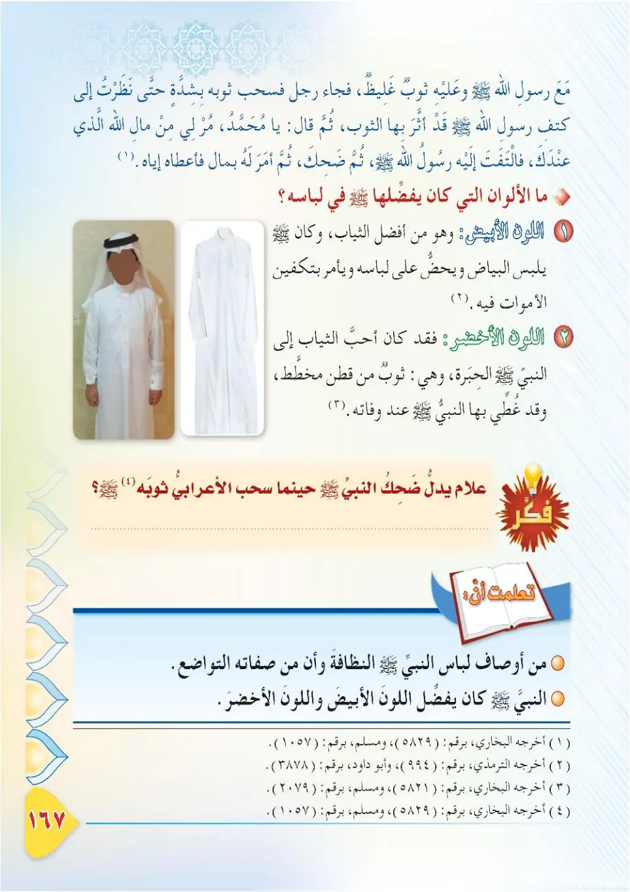
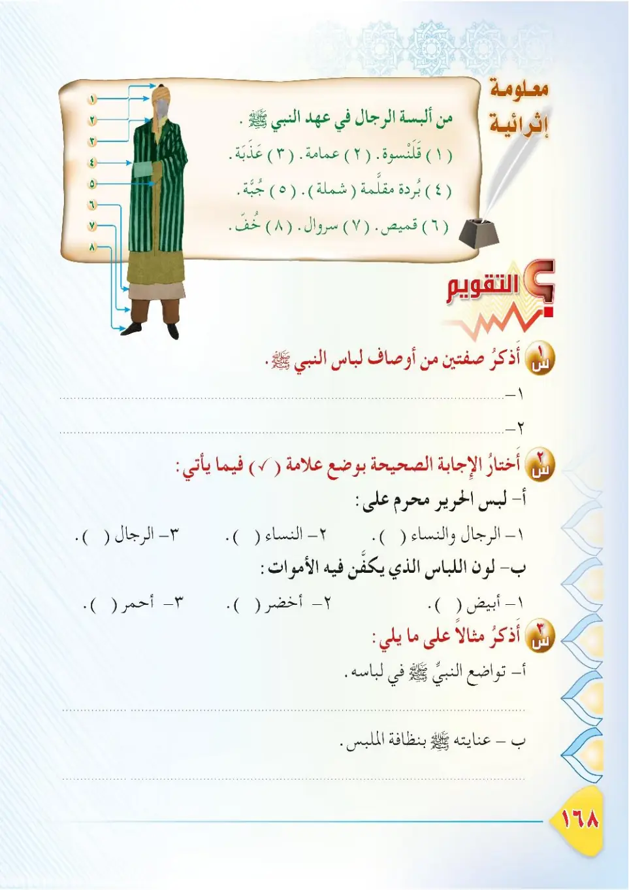

Stage 3·المرحلة الثالثة📖 Unit 5
صِفَةُ لِبَاسِ النَّبِيِّ ﷺ The Description of the Prophet's ﷺ Clothing
From the Textbookpp. 167–169



كُلُّ مِنَّا يُحِبُّ أَنْ يَلْبَسَ مَا يَلِيقُ بِهِ مِنَ الثِّيَابِ. وَقَدْ كَانَ لِلنَّبِيِّ ﷺ سُنَنٌ فِي لِبَاسِهِ، وَأَوْصَافٌ فِي اخْتِيَارِ ثِيَابِهِ. فَلْنَتَعَرَّفْ — فِي هَذَا الدَّرْسِ — عَلَى صِفَةِ لِبَاسِ النَّبِيِّ ﷺ.
Kullu minna yuhibbu an yalbasu ma yaliq bihi mina ath-thiyab. Wa qad kana lin-nabiyyi ﷺ sunanun fi libasih, wa awsafun fi ikhtiyari thiyabih. Falnata'arraf — fi hadha ad-dars — 'ala sifat libasi an-nabiyyi ﷺ.
Each of us loves to wear clothes that suit him. The Prophet ﷺ had etiquettes (sunan) in his clothing and attributes in choosing his garments. In this lesson, let us learn about the description of the Prophet's ﷺ clothing.
நமக்கு உகந்த உடையை நாம் அனைவரும் அணிய விரும்புகிறோம். நபி ﷺ அவர்களுக்கு உடை விஷயத்தில் சுன்னத்களும், உடை தேர்வில் பண்புகளும் இருந்தன. இந்தப் பாடத்தில் நபி ﷺ அவர்களின் உடையின் தன்மையை அறிவோம்.
عَنِ ابْنِ عَبَّاسٍ رَضِيَ اللهُ عَنْهُمَا أَنَّ النَّبِيَّ ﷺ قَالَ: «الْبَسُوا مِنْ ثِيَابِكُمُ الْبَيَاضَ، فَإِنَّهَا مِنْ خَيْرِ ثِيَابِكُمْ، وَكَفِّنُوا فِيهَا مَوْتَاكُمْ». أَخْرَجَهُ التِّرْمِذِيُّ.
'Ani ibn 'Abbasa radiyallahu 'anhuma anna an-nabiyya ﷺ qal: «Albisu min thiyabikumu al-bayad, fa-innaha min khayri thiyabikum, wa kaffinu fiha mawtakum». Akhrajahu at-Tirmidhi.
Ibn 'Abbas, may Allah be pleased with them both, reported that the Prophet ﷺ said: "Wear the white among your garments, for indeed they are among the best of your garments, and shroud your dead in them." Narrated by At-Tirmidhi.
இப்னு அப்பாஸ் (ரலி) அறிவிக்கிறார்: நபி ﷺ கூறினார்கள்: "வெள்ளை உடைகளை அணியுங்கள்; ஏனெனில் அவை உங்கள் உடைகளில் சிறந்தவை. உங்கள் இறந்தவர்களை அவற்றில் அடக்கம் செய்யுங்கள்." (திர்மிதி)
مَاذَا نَسْتَفِيدُ مِنْ هَذَا الْحَدِيثِ؟ ١- اسْتِحْبَابُ لِبْسِ الثِّيَابِ الْبَيْضَاءِ؛ لِأَنَّهَا أَحْسَنُ وَأَجْمَلُ. ٢- اسْتِحْبَابُ تَكْفِينِ الْمَوْتَى فِي الثَّوْبِ الْأَبْيَضِ.
Madha nastafeedu min hadha al-hadith? 1. istihbabu lubsi ath-thiyabi al-bayda'; li'annaha ahsan wa ajmal. 2. istihbabu takfeeni al-mawta fil-thawbi al-abyad.
What do we learn from this hadith?
1. It is recommended to wear white clothes, for they are the best and most attractive.
2. It is recommended to shroud the dead in white cloth.
இந்த ஹதீஸிலிருந்து என்ன பயன்?
1. வெள்ளை உடை அணிவது விரும்பத்தக்கது; அவை சிறந்ததும் அழகானதும் ஆகும்.
2. இறந்தவர்களை வெள்ளைத் துணியில் கஃபன் செய்வது விரும்பத்தக்கது.
عَنْ أَنَسِ بْنِ مَالِكٍ رَضِيَ اللهُ عَنْهُ قَالَ: كُنْتُ أَمْشِي مَعَ النَّبِيِّ ﷺ وَعَلَيْهِ بُرْدٌ نَجْرَانِيٌّ غَلِيظُ الْحَاشِيَةِ، فَأَدْرَكَهُ أَعْرَابِيٌّ، فَجَبَذَهُ بِرِدَائِهِ جَبْذَةً شَدِيدَةً، حَتَّى أَثَّرَتْ حَاشِيَتُهُ فِي عَاتِقِهِ، ثُمَّ قَالَ: يَا مُحَمَّدُ، مُرْ لِي مِنْ مَالِ اللهِ الَّذِي عِنْدَكَ. فَالْتَفَتَ إِلَيْهِ النَّبِيُّ ﷺ فَضَحِكَ، ثُمَّ أَمَرَ لَهُ بِعَطَاءٍ. أَخْرَجَهُ الْبُخَارِيُّ.
'An Anasi ibn Malikin radiyallahu 'anhu qal: kuntu amshi ma'a an-nabiyyi ﷺ wa 'alayhi burdun najraniyyun ghalizu al-hashiyah, fa-adrakahu a'rabiyyun, fajabadhahu bi-rida'ihi jabadhatan shadidah, hatta aththarat hashitatuhu fi 'atiqih, thumma qala: ya Muhammadu, mur li min malillahi alladhi 'indak. Faltafata ilayhi an-nabiyyu ﷺ fadahika, thumma amara lahu bi-'ata'. Akhrajahu al-Bukhari.
Anas ibn Malik, may Allah be pleased with him, said: "While I was walking with the Prophet ﷺ, who was wearing a Najrani Burd (cloak) with a thick border, a bedouin overtook him and pulled his cloak violently, even leaving a mark on his shoulder. Then he said: O Muhammad, order that I be given some of the wealth of Allah which you have. The Prophet ﷺ turned to him, smiled, and ordered that he be given something." Narrated by Al-Bukhari.
அனஸ் இப்னு மாலிக் (ரலி) கூறினார்கள்: "தடிமனான ஓரம் கொண்ட நஜ்ரான் கம்பளி உடையுடன் நபி ﷺ அவர்களுடன் நான் நடந்து சென்றேன். ஒரு கிராமவாசி வந்து அவர்களின் மேலங்கியை வலிமையாக இழுத்தார்; அது அவர்களின் தோளில் குறி உண்டாக்கியது. பிறகு 'முஹம்மதே! உன்னிடம் உள்ள அல்லாஹ்வின் செல்வத்திலிருந்து கொடுக்க ஆணையிடு' என்று கூறினார். நபி ﷺ அவரை நோக்கித் திரும்பிப் புன்னகைத்து, அவருக்கு கொடுக்க ஆணையிட்டார்கள்." (புகாரி)
الدُّرُوسُ الْمُسْتَفَادَةُ مِنْ هَذَا الْحَدِيثِ: ١- صَبْرُ النَّبِيِّ ﷺ عَلَى الْجَاهِلِينَ وَحُسْنُ خُلُقِهِ مَعَهُمْ. ٢- تَوَاضُعُ النَّبِيِّ ﷺ؛ إِذْ لَبِسَ ثَوْبًا بَسِيطًا خَشِنًا، وَهُوَ سَيِّدُ الْخَلْقِ. ٣- جُودُ النَّبِيِّ ﷺ وَكَرَمُهُ؛ إِذْ أَعْطَى الْأَعْرَابِيَّ مَا طَلَبَ.
Ad-durusu al-mustafadah min hadha al-hadith: 1. sabru an-nabiyyi ﷺ 'ala al-jahileen wa husnu khuluqih ma'ahum. 2. tawadu'u an-nabiyyi ﷺ; idh labisa thawban basitan khashinan, wa huwa sayyidu al-khalq. 3. joodu an-nabiyyi ﷺ wa karamuh; idh a'ta al-a'rabiyya ma talab.
Lessons learned from this hadith:
1. The patience of the Prophet ﷺ with the ignorant and his noble character with them.
2. The humility of the Prophet ﷺ; he wore a simple, coarse garment even though he is the master of creation.
3. The generosity of the Prophet ﷺ; he gave the bedouin what he asked.
இந்த ஹதீஸிலிருந்து பாடங்கள்:
1. அறியாதவர்களிடம் பொறுமை; அவர்களுடன் அழகிய பண்பு.
2. தாழ்மை; படைப்பின் தலைவராக இருந்தும் எளிய உடையை அணிந்தார்கள்.
3. தாராளம்; கேட்டதை அந்த கிராமவாசிக்கு வழங்கினார்கள்.
مَلَابِسُ النَّبِيِّ ﷺ: كَانَ النَّبِيُّ ﷺ يَلْبَسُ الْقَمِيصَ، وَالْعِمَامَةَ، وَالْإِزَارَ، وَالرِّدَاءَ، وَالْجُبَّةَ، وَالْبُرْدَةَ، وَالْحُلَّةَ. مَعْلُومَةٌ: أَحَبُّ الثِّيَابِ إِلَى النَّبِيِّ ﷺ الْحِبَرَةُ، وَهِيَ ثَوْبٌ يَجْمَعُ بَيْنَ لَوْنَيْنِ، مِنَ الْيَمَنِ.
Malabisu an-nabiyyi ﷺ: kana an-nabiyyu ﷺ yalbasu al-qamis, wal-'imamah, wal-izar, war-rida', wal-jubbah, wal-burdah, wal-hullah. Ma'lumah: ahabbu ath-thiyabi ila an-nabiyyi ﷺ al-hibarah, wa hiya thawbun yajma'u bayna lawnayni, min al-Yaman.
The garments of the Prophet ﷺ:
The Prophet ﷺ wore the shirt (qamis), turban ('imamah), loincloth (izar), cloak (rida'), long robe (jubbah), striped cloak (burdah), and suit (hullah).
Fact: The most beloved garment to the Prophet ﷺ was al-Hibarah, a two-coloured garment from Yemen.
நபி ﷺ அவர்களின் உடைகள்:
நபி ﷺ கமீஸ், இமாமா, இஸார், ரிதா, ஜுப்பா, புர்தா, ஹுல்லா ஆகியவற்றை அணிந்தார்கள்.
தகவல்: நபி ﷺ அவர்களுக்கு மிகவும் பிடித்த உடை 'ஹிபரா' - யமனில் இருந்து வரும் இரு வண்ண உடை.